|
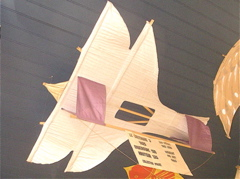 Centaure 3. |
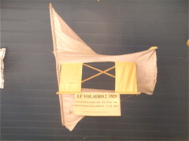 Encore le Volaero... |
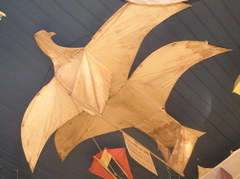 Un AigloBiplan ! |
|
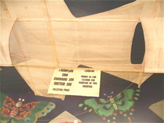 Un Aéroplane (sic). |
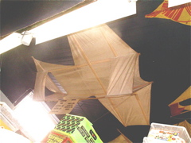 Vue générale. |
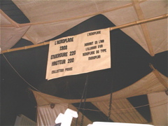 Etiquette. |
|
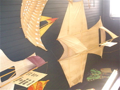 Autre vue. |
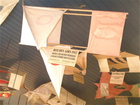 Un Roi des Airs qui a souffert, dommage... |
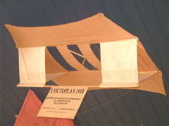 Octoplan, formule intéressante... |
|
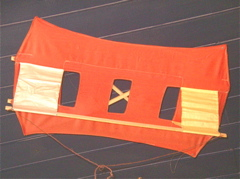 Un autre Octoplan. |
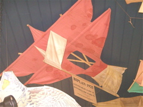 Un Biplan. |
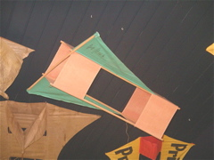 Une petite boîte, le Planeur RL. |
|
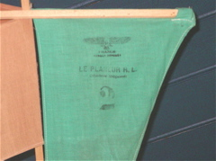 La marque. |
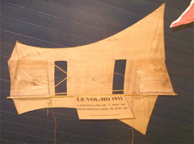 Le Volho, beau CV. |
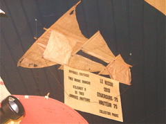 Le Recor, un peu fatigué... |
|
Le Picvert et son bec... |
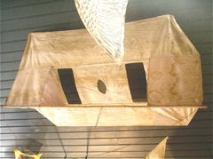 Un Octoplan de plan différent. |
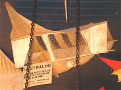 Le Volley-Ball et sa balle à lancer dedans. |
|
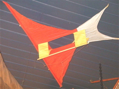 Le Martinet, tout petit. |
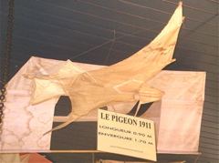 Un rare sans dérives Conyne. |
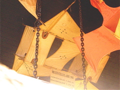 Beau cellulaire, un peu caché. |
|
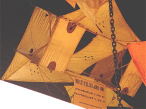 Gomes, évidemment. |
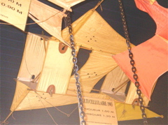 Bien fini pour un CV de 1 m... |
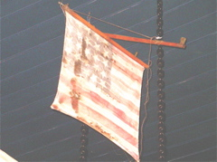 Messager... américain. |
|
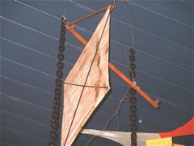 Le même de face. |
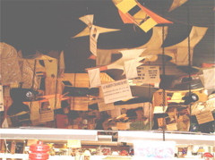 Vue générale au-dessus du bazar. |
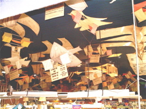 La même, entre les néons. |